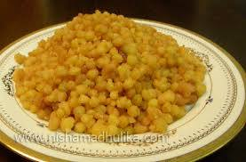

बचपन में किसी दावत से जीम कर आते तो मम्मी-पापाजी या अड़ौस-पड़ौस के काकासा- काकीसा पूछते “सागर-आज क्या जीम कर आए हो”? हम उन्हें बड़ी खुशी से बताते चने की दाल की और मीठी कैरी या मीठी मैथी की सब्जी! वे फिर पूछते अरे मिठाई में क्या था? हम कहते नुकती (मीठी बूंदी) या बेसन की चक्की (बर्फी) कभी बालूशाही और कभी सिर्फ जलेबी।

आहा! बचपन के उन जीमणों का क्या लुत्फ़ आता था।
आजकल अक्सर दावतों में जाना होता रहता है लेकिन वो आनन्द – लुत्फ़ नहीं रहा। बीस तरह की मिठाईयां, बीस तरह के चाट-पूड़ी आदि के स्टॉल, आठ तरह की रोटियां, दस तरह की सब्जियां और चार पाँच तरह की आईसक्रीम! पेट भर जाता है लेकिन मन कभी नहीं भरता, बीस तरह की मिठाईयों में एक भी ऐसी नहीं होती जो बचपन की नुकती और चक्की की बराबरी कर सके, और ना ही दस तरह की सब्जियां उस चने की दाल की या कैरी या मीठी मैथी की। जिमाने वाला कोई नहीं होता ना ही कोई मनुहार कर एक टुकड़ा मिठाई और खाने का आग्रह करने वाला।
बचपन! अभी तो मन भर के जीमे भी नहीं थे और तुम चले भी गए… काश एक बार फिर से लौट आते।
फेसबुक पर 21 जून 2014 को पोस्ट